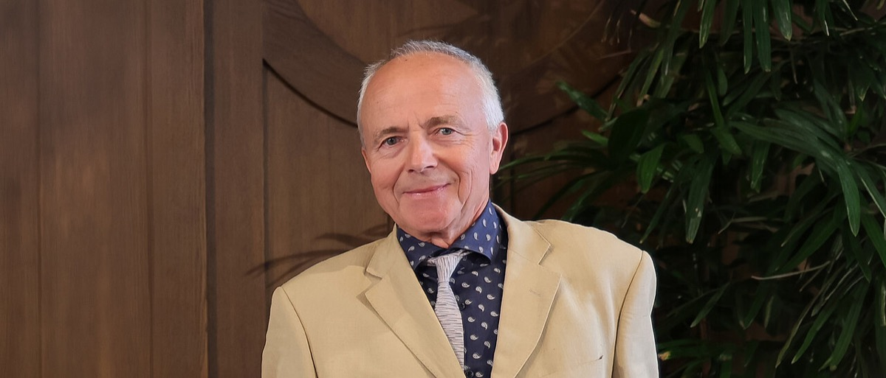

INPUT
Candidate microbial rhodopsin
Express a protein from a light-sensitive alga in a test cell.
CHANNELRHODOPSINS · PLANT BIOPHYSICS
A biophysicist who helped identify and functionally characterise channelrhodopsins, including ChR1 and ChR2, revealing proteins that convert light directly into ion flow.

WHY HE MATTERS
Nagel’s work helped establish that algal rhodopsins themselves form light-gated cation channels. That functional proof made the proteins portable biological components and prepared the ground for their use in excitable cells.
Express a protein from a light-sensitive alga in a test cell.
Electrophysiology reveals whether light directly opens an ion pathway.
ChR1 and ChR2 became defined molecular tools for optical control.
THREE-PASS REVIEW
Nagel works at the intersection of plant physiology, membrane proteins and biophysics. The path from algal movement to a general cell-control tool began with asking exactly what the photoreceptor protein does.
VERIFIED READING